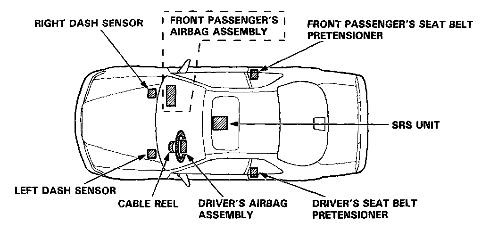
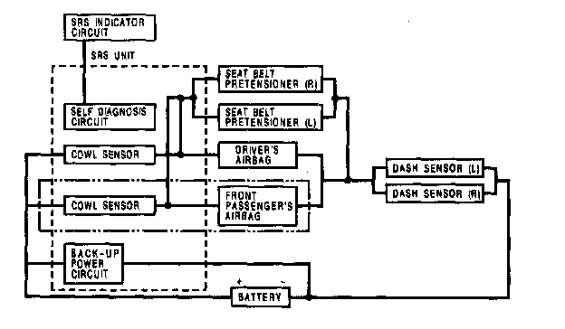
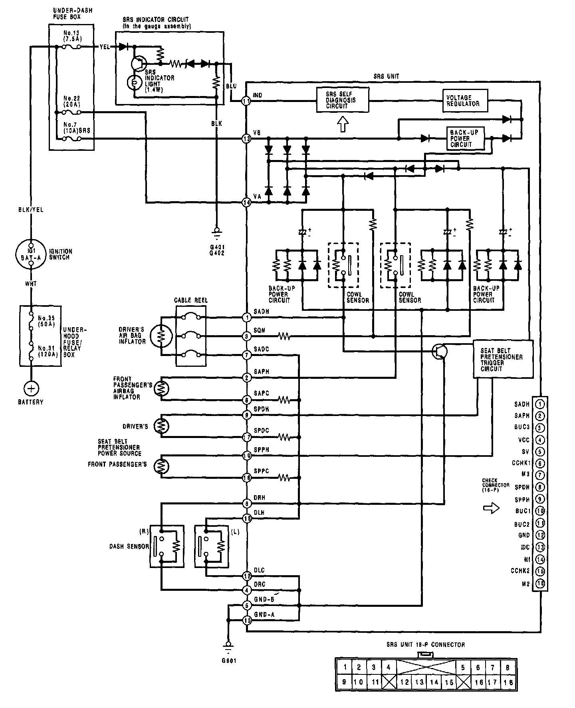

Air Bag Systems: Description and Operation
Description and Operation
SRS Airbag System
The SRS is a safety device which, when used in conjunction with the seat belt, is designed to protect the driver in a frontal impact exceeding a certain set limit.
The system is composed of left and right dash sensors, the SRS unit (including cowl sensors), the cable reel, driver's airbag, and front passenger's airbag.
Seat Belt Pretensioner
The seat belt pretensioner is linked with the SRS airbag to further increase the effectiveness of the seat belt. In a front-end collision, the pretensioner instantly retracts the belt firmly to secure the occupants in their seats.

Operation
As shown in the diagram below, the left and right dash sensors are connected in parallel. The parallel set of sensors is connected in series to each airbag inflator circuit and the car battery. In addition, a back-up power circuit is connected in parallel with the car battery. The back-up power circuit and the cowl sensors are located inside the SRS unit.
For the SRS to operate:
(1) One or both cowl sensors and one or both dash sensors must activate.
(2) Electrical energy must be supplied to the airbag inflator by the battery, or the back-up power circuit if the battery voltage is too low.
(3) Airbag and seat belt pretensioner charges must be released.
Then the airbag(s) will deploy and the pretensioners will activate.
It takes about 0.1 seconds from the beginning of the airbag's deployment until it is completely deflated (frontal collision against a fixed wall with a speed of 50 km/h [30 mi/hr]).

Self-diagnosis System
A self-diagnosis circuit is built into the SRS unit; when the ignition switch is turned ON, the SRS indicator light comes on and goes off after about 6 seconds if the system is operating normally. If the light does not come on, or does not go off after 6 seconds, or if it comes on while driving, it indicates an abnormality in the system. The system must be inspected and repaired as soon as possible.

Circuit Diagram